Odwrotne obciążenie w transakcjach zakupu
Informacje ogólne
Zgodnie z wymaganiami przepisów polskiego prawa, wewnątrzwspólnotowe nabycie towarów (WNT) i usług oraz import usług podlegają opodatkowaniu VAT, co jest jednoznaczne z koniecznością wykazania transakcji z obliczonym podatkiem VAT w rejestrze VAT. Do obliczania naliczonego i należnego podatku VAT z tytułu tego typu transakcji wykorzystywana jest standardowa funkcjonalność Odwrotne obciążenie. Aby przystosować tą funkcjonalność do wymagań polskiego prawa, zostały do niej dodane następujące elementy:
Funkcjonalność Odwrotne obciążenie została rozszerzona o tworzenie zapisu VAT dla sprzedaży. Dzięki temu transakcja WNT i zakupu usług z kwotą podatku VAT należnego wykazywane są zarówno w rejestrze VAT sprzedaży, jak i zakupu.
Polska Lokalizacja dla Microsoft Dynamics 365 Business Central on‑premises umożliwia również kalkulację podatku VAT w walucie lokalnej według kursu wymiany z innego dnia niż data przeliczenia wartości zakupu i zobowiązań na potrzeby ksiąg rachunkowych.
Ustawienia
Do kalkulacji i księgowania podatku VAT w ramach odwrotnego obciążenia konieczne jest zdefiniowanie właściwych ustawień. W tym celu, należy postępować według następujących kroków:
Należy wybrać Działy > Zarządzanie Finansami > Administracja > Ustawienia Księgowe VAT.
W oknie Ustawienia księgowe VAT, które się otworzy, należy zaznaczyć wiersz z kombinacją kodów w polach Gosp. grupa księgowa VAT i Tow. grupa księgowa VAT, która odnosi się do transakcji wewnątrzwspólnotowego nabycia towarów i usług oraz importu usług, a następnie należy wybrać Edycja.
W oknie Kartoteka ustaw. księg. VAT należy zwrócić uwagę na kilka pól:
Typ kalkulacji VAT na karcie skróconej Ogólne – w tym polu musi być wybrana opcja Odwrotne obciążenie.
Konto odwrotnego obciążenia na karcie skróconej Zakupy – z listy rozwijanej w tym polu należy wybrać konto K/G, na które zostanie zaksięgowana kwota podatku VAT należnego obliczona dla transakcji wewnątrzwspólnotowego nabycia towarów i usług oraz importu usług.
Konto niezr. odwrotnego obciążenia na karcie skróconej Zakupy – z listy rozwijanej w tym polu należy wybrać konto K/G, na które zostanie zaksięgowana niezrealizowana kwota podatku VAT należnego obliczona dla transakcji wewnątrzwspólnotowego nabycia towarów i usług oraz importu usług.
Konto przełoż. odwrotnego obciążenia na karcie skróconej Zakupy – z listy rozwijanej w tym polu należy wybrać konto K/G, na które zostanie zaksięgowana przełożona kwota podatku VAT należnego obliczona dla transakcji wewnątrzwspólnotowego nabycia towarów i usług oraz importu usług.
Konto korekty kursu wal. odwrotnego obciążenia na karcie skróconej Zakupy – z listy rozwijanej w tym polu należy wybrać konto K/G, na które zostanie zaksięgowana różnica wynikająca z przeliczenia VAT według innego kursu niż zobowiązanie, ale dotyczy to tylko kwoty VAT nie podlegającej odliczeniu.
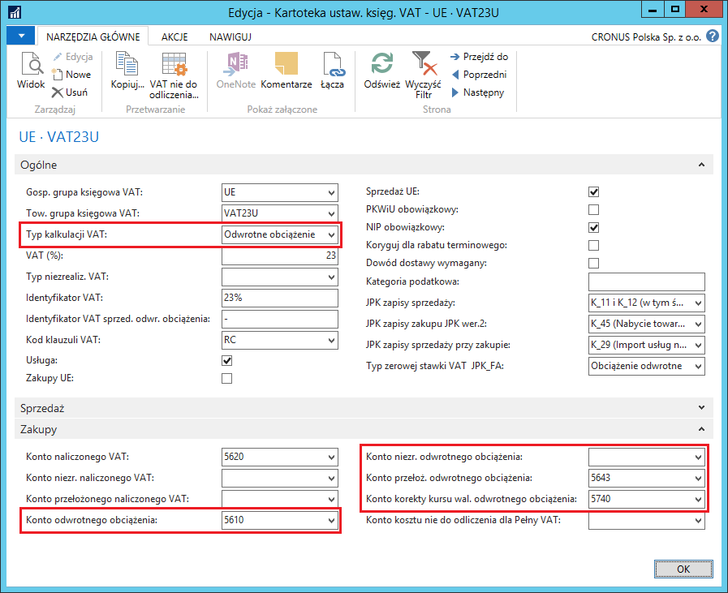
W sytuacji, gdy kurs wymiany waluty do obliczenia podatku VAT jest inny niż kurs wymiany waluty zastosowany do całości zaksięgowanej faktury zakupu, musi zostać doksięgowana kwota różnicy w podatku VAT. Księgowanie tej różnicy może być dokonywane ręcznie, po zaksięgowaniu faktury zakupu (opcja zalecana) lub automatycznie (opcja niezalecana z powodu wpływu na obniżenie wydajności systemu). W celu zdefiniowania tego ustawienia, należy postępować według następujących kroków:
Należy wybrać Działy > Zakup > Administracja > Ustawienia zakupów i zobowiązań.
W oknie Ustawienia zakupów i zobowiązań, które się otworzy, na karcie skróconej Ogólne, należy zaznaczyć pole Automatyczne księgow. różnicy kurs. odwrotnego obciążenia, jeśli kwota różnicy w kalkulacji podatku VAT wynikająca z zastosowania różnych kursów wymiany ma być księgowana automatycznie. Pozostawienie pola pustego oznacza, że różnica ta musi być zaksięgowana ręcznie po zaksięgowania faktury zakupu (sposób ręcznego księgowania opisany jest w dalszej części tego rozdziału).
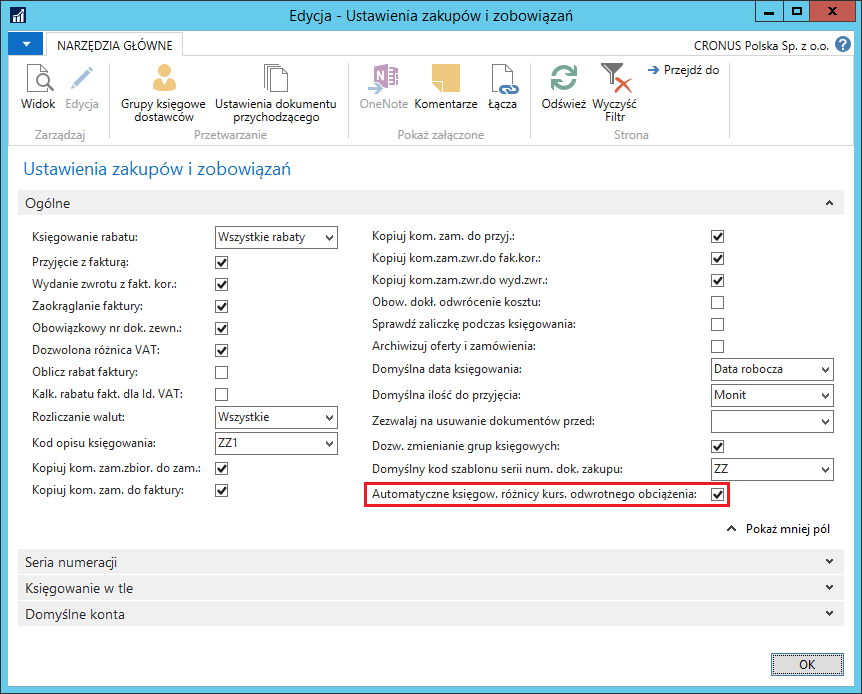
Uwaga
Ze względu na możliwość zablokowania tabel podczas operacji księgowania, pole Automatyczne księgow. różnicy kurs. odwrotnego obciążenia nie powinno zawierać ustawienia Tak, jeśli w polu Użyj poprzednich zasad blokowania tabeli Zapis K/G w tabeli Ustawienia księgi głównej wybrano ustawienie Nie.
Obsługa
Zaksięgowanie faktury zakupu za towary i usługi nabyte na terenie Unii Europejskiej lub za usługi nabyte poza Unią Europejską spowoduje obliczenie i zaksięgowanie podatku VAT, bez wpływu na wartość zakupów oraz wysokość zobowiązań wobec dostawcy. W tym celu, należy postępować według następujących kroków:
- Należy w standardowy sposób utworzyć nową fakturę zakupu, w której należy zwrócić uwagę na to, żeby wybrane były: Gosp. grupa księgowa VAT i Tow. grupa księgowa VAT, dla kombinacji których są zdefiniowane właściwe ustawienia (opisane powyżej).
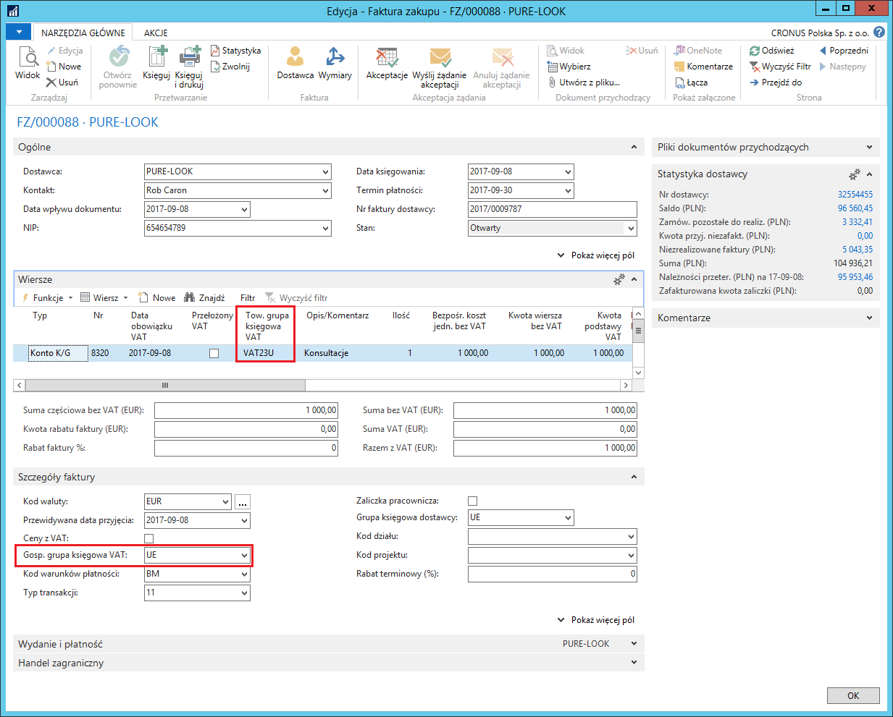
Uwaga
Kurs wymiany waluty do przeliczenia na walutę lokalną wartości zakupu i zobowiązań z faktury zakupu pobierany jest z tabeli kursów według daty w polu Data księgowania, a kurs wymiany waluty do przeliczenia na walutę lokalną kwoty podatku VAT pobierany jest z tabeli kursów według daty w polu Data obowiązku VAT.
Należy sprawdzić podsumowanie wartości w fakturze zakupu, w tym celu, należy w oknie kartoteki faktury zakupu wybrać Statystyka.
W oknie Statystyka zakupów Faktura, które się otworzy, należy zwrócić uwagę na pola na karcie skróconej Odwrotne obciążenie:
Kod waluty odwrotnego obciążenia – kod waluty pobrany z parametrów faktury zakupu.
Data obowiązku VAT – data obowiązku VAT pobrana z parametrów faktury zakupu; jednocześnie jest to data, według której ustalany jest kurs wymiany waluty dla kwoty podatku VAT.
Kwota odwrotnego obciążenia – kwota obliczonego podatku VAT naliczonego i należnego wyrażona w walucie faktury.
Kwota odwrotnego obciążenia (PLN) – równowartość w walucie lokalnej kwoty obliczonego podatku VAT naliczonego i należnego.
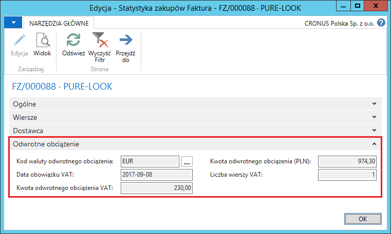
W przypadku wystąpienia na jednej fakturze zakupu wierszy z kilkoma różnymi stawkami VAT, podsumowanie kalkulacji kwoty odwrotnego obciążenia dla każdej stawki oddzielnie można zobaczyć na karcie skróconej Wiersze w oknie Statystyka faktury zakupu, gdzie zostały dodane 2 nowe pola:
Kwota odwrotnego obciążenia – kwota obliczonego podatku VAT naliczonego i należnego wyrażona w walucie faktury.
Kwota odwrotnego obciążenia (PLN) – równowartość w walucie lokalnej kwoty obliczonego podatku VAT naliczonego i należnego.
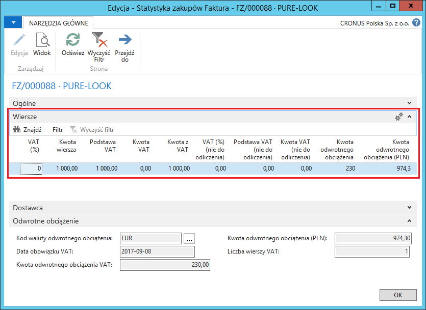
- W przypadku, gdy kurs wymiany waluty do kalkulacji kwoty odwrotnego obciążenia pobrany z tabeli kursów wymiany według Daty obowiązku VAT z jakiegoś powodu jest niewłaściwy, należy go zmienić. W tym celu, w oknie Statystyka zakupów Faktura, na karcie skróconej Odwrotne obciążenie, w polu Kod waluty odwrotnego obciążenia należy kliknąć przycisk asysty. Otworzy się okno Zmiana kursu wymiany, w którym, w polu Relacyjny kurs wymiany należy zmienić ręcznie wartość wstawioną domyślnie na właściwą.
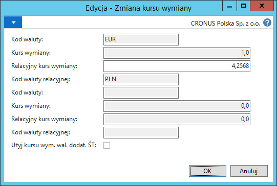
- Należy w standardowy sposób zaksięgować fakturę zakupu.
Efekty księgowania w postaci Zapisów K/G i Zapisów VAT można zobaczyć nawigując zaksięgowaną fakturę zakupu:
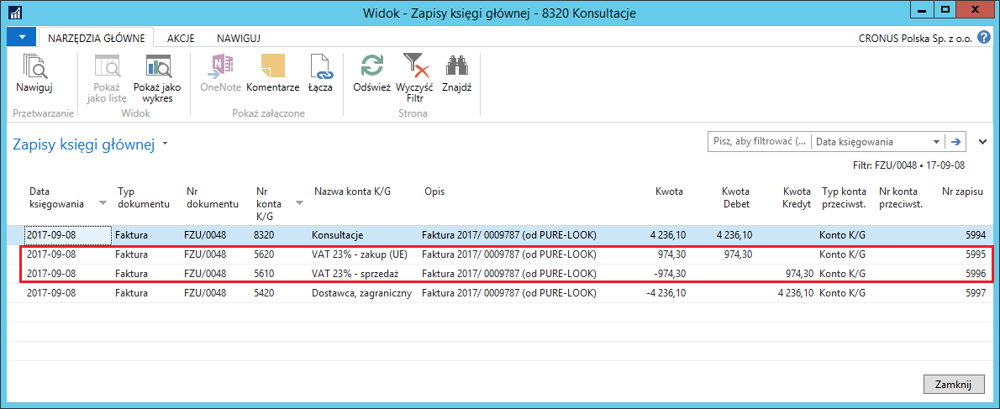
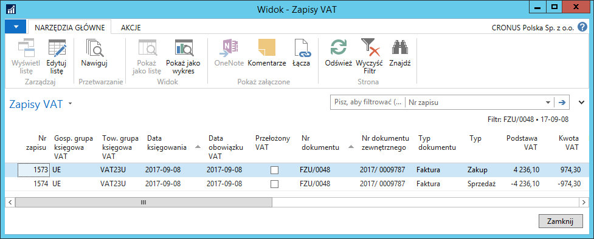
W sytuacji, gdy w zaksięgowanej fakturze zakupu zostały użyte różne kursy wymiany: inny dla wartości zakupu i zobowiązań, a inny dla kwoty odwrotnego obciążenia (niezależnie od tego, czy zostały one pobrane z tabeli na podstawie Daty księgowania i Daty obowiązku VAT, czy zostały ręcznie zmienione przed zaksięgowaniem), po zaksięgowaniu faktury zakupu, jeżeli pole Automatyczne księgow. różnicy kurs. odwrotnego obciążenia w Ustawieniach zakupów i zobowiązań nie jest zaznaczone, konieczne jest dokonanie dodatkowego księgowania korekty kwoty VAT. W tym celu, należy postępować według następujących kroków:
Należy wybrać Działy > Zarządzanie Finansami > Działania okresowe > VAT > Arkusz rozliczania VAT.
W oknie Arkusz rozliczania VAT, które się otworzy, należy ustawić odpowiednie filtry, aby na ekranie wyświetlić wybrane zapisy VAT. W wierszach Arkusza rozliczenia VAT, w których występuje różnica kwoty VAT, zaznaczone jest pole Inny kurs dla odwrotnego obciążenia:
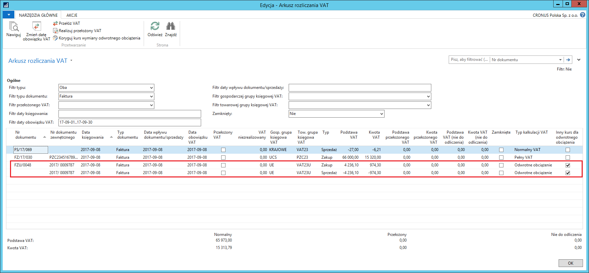
Należy zaznaczyć wiersz typu Zakup z kwotą odwrotnego obciążenia do skorygowania.
Należy wybrać Koryguj kurs wymiany odwrotnego obciążenia.
Otworzy się okno z podsumowaniem informacji o odwrotnym obciążeniu obliczonym w danym wierszu. Jeśli kursy wymiany waluty są różne (inny dla wartości zakupu i zobowiązań, a inny dla kwoty odwrotnego obciążenia), wartość w polu Różnica kwot jest różna od 0:
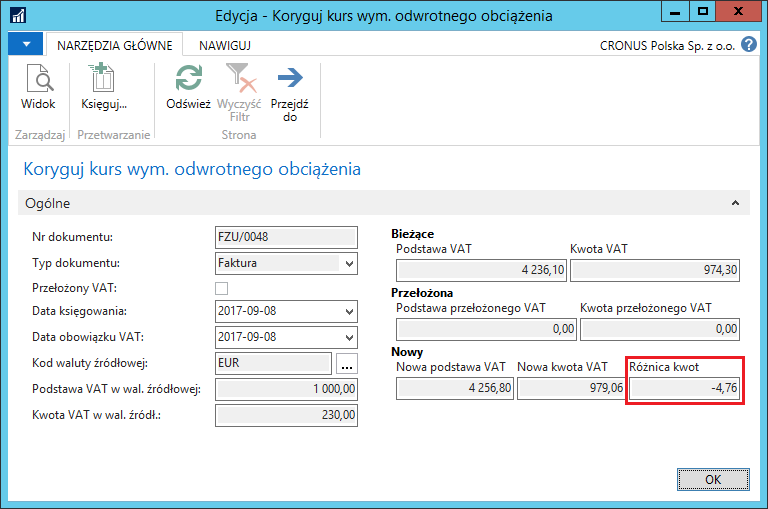
W tym samym oknie należy zwrócić uwagę na pola dat:
Data księgowania – data, z jaką zostanie zaksięgowana korekta kursu wymiany. Domyślnie wstawiana jest data robocza, w razie potrzeby można ją zmienić ręcznie.
Data obowiązku VAT – data, z jaką zostanie zakwalifikowana korekta kwoty VAT do okresu rozliczenia podatku VAT. Domyślnie wstawiana jest data z korygowanego zapisu VAT, w razie potrzeby można ją zmienić ręcznie.
Należy wybrać Księguj.
Efektem zaksięgowania korekty kursu wymiany będą Zapisy K/G i Szczegółowe zapisy VAT.
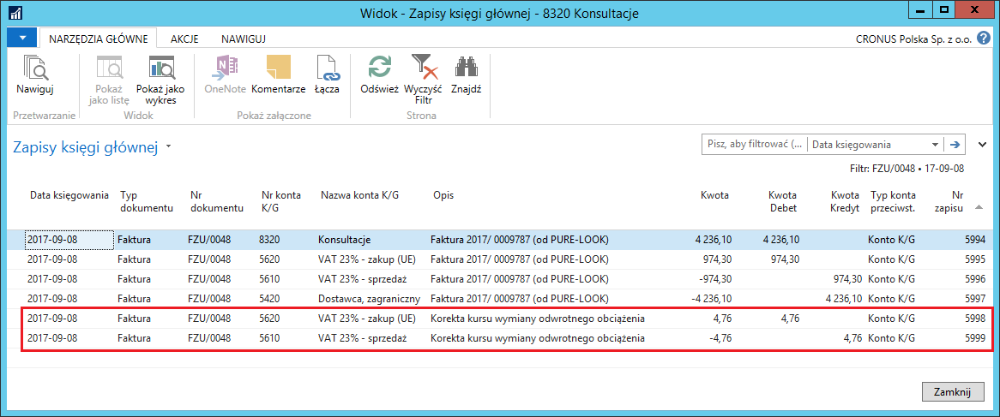
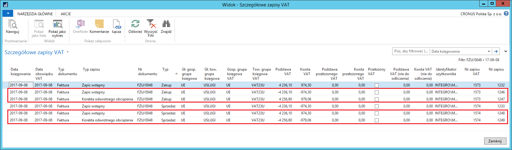
W sytuacji, gdy w zaksięgowanej fakturze zakupu kursy wymiany waluty są identyczne dla wartości zakupu i zobowiązań oraz kwoty odwrotnego obciążenia, może okazać się, że powinny być one różne. W celu zmiany kursu wymiany waluty dla zaksięgowanej kwoty odwrotnego obciążenia, należy postępować według następujących kroków:
Należy wybrać Działy > Zarządzanie Finansami > Działania okresowe > VAT > Arkusz rozliczania VAT.
W oknie Arkusz rozliczania VAT, które się otworzy, należy ustawić odpowiednie filtry, aby na ekranie wyświetlić wybrane zapisy VAT, a następnie zaznaczyć wiersz z odwrotnym obciążeniem do skorygowania.
Należy wybrać Koryguj kurs wymiany odwrotnego obciążenia.
Otworzy się okno z podsumowaniem informacji o odwrotnym obciążeniu obliczonym w danym wierszu. W polu Kod waluty odwrotnego obciążenia należy kliknąć przycisk asysty. Otworzy się okno Zmiana kursu wymiany, w którym, w polu Relacyjny kurs wymiany należy ręcznie wprowadzić nowy kurs wymiany:
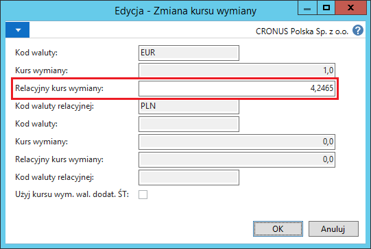
Zmieniony kurs wymiany należy zatwierdzić wybierając OK.
W oknie Koryguj kurs wym. Odwrotnego obciążenia można zauważyć, że w polu Różnica kwot jest kwota różna od zera. Skorygowaną kwotę odwrotnego obciążenia należy zaksięgować wybierając Księguj.
Zaksięgowana kwota odwrotnego obciążenia jest wykazywana, w wybranym okresie VAT, w rejestrze VAT zakupu i w rejestrze VAT sprzedaży:
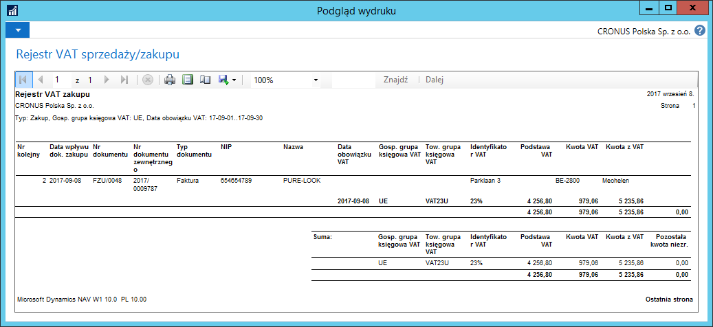
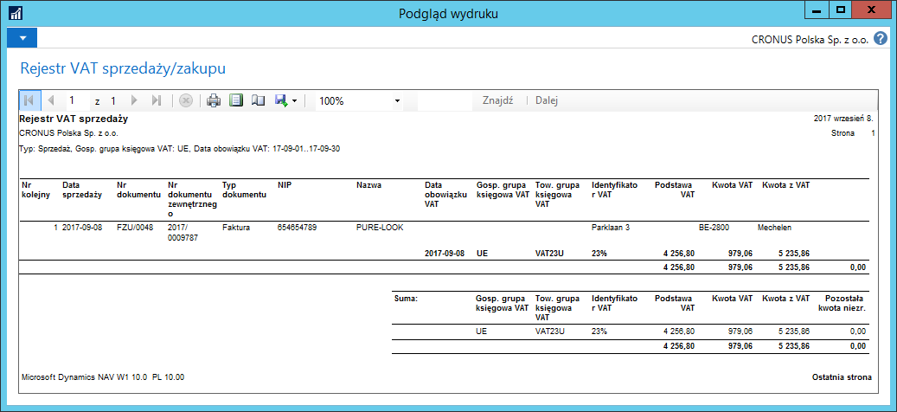
Uwaga
Obsługa odwrotnego obciążenia została dodana również do dokumentu Zamówienie zakupu.